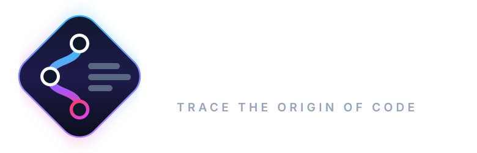

Don't just blame it.
Trace its cynn.
Standard git blame stops at formatting and lint commits. cynn traverses Git history to surface the true introducing commit, PR discussions, and reviewer constraints.
$ cargo install cynn • brew install NayanSrivastav/tap/cynn
Why Autonomous Coding Agents Need Code Provenance
AI agents like Claude Code, Cursor, Devin, and Codex refactor code based solely on static syntax at HEAD. Without historical context, they strip away defensive constraints and reintroduce resolved production outages.
✕ Without cynn
The Silent Regression Trap:
An agent sees an obscure retry check or defensive fallback. Lacking the incident context that created it, the agent considers it "redundant" and deletes it—reintroducing a critical production bug.
✓ With cynn (--json)
The Pre-Refactoring Invariant:
The agent queries cynn <file>:<lines> --json before refactoring. It receives the true origin PR discussion, reviewer constraints, and linked issues, safely preserving edge cases.
Evidence & Confidence Scoring Engine
To prevent AI agent hallucinations, cynn strictly separates objective historical facts from inferred intent, categorizing evidence into four deterministic confidence tiers.
Substantive PR rationale or reviewer decision:
- Pull Request / MR body description (>20 chars).
- Substantive technical reviewer note or constraint.
- Trivial approvals ("LGTM", "thanks", "approved") are filtered out.
Substantive Git commit description:
- Commit message extended body (>20 chars).
- Verified multi-origin block composition where all individual slices are DAG-resolved.
PR title, commit subject, or unverified fallback:
- Single-line commit summary or PR title without detailed rationale.
- Unverified DAG fallback where line evolution fell back to current blame commit.
- Multi-origin blocks where one or more slices used fallback provenance.
Zero rationale recorded:
- No explanation recorded in commit message or review history.
- Explicitly communicated to agents to prevent hallucination.
💡 Note on Review Comments: Technical reviewer comment classification uses a heuristic noise-reduction filter (minimum length & generic approval exclusion such as LGTM, +1, thanks) to surface actionable engineering rationale rather than formal semantic verification.
Built for High-Velocity Engineering & AI Tooling
True Origin Detection
Iteratively traverses parent commits through the Git DAG, skipping formatting deltas and tracking code across moves and renames.
Multi-Origin Dissection
Dissects multi-line code ranges into distinct originating commit slices rather than falsely attributing the entire block to a single commit.
Multi-Platform Remote Support
Native context enrichment across GitHub, GitLab, and Bitbucket—mining merged PRs, inline review comments, and commit trailers with 100% offline fallback.
Machine-Readable for Agents
Exports deterministic, structured JSON (--json) separating verifiable facts from inferences, preventing LLM hallucinations.
Companion Test Matcher
Heuristically identifies associated test suites exercising the legacy code you are investigating.
100% Local & Private
Runs entirely inside your local terminal with zero telemetry, zero analytics, and zero cloud server dependencies.
The Archaeological Matrix: How vs. Why
git log -L shows how code mutated over time with raw diffs. cynn answers why code was introduced by linking Git commits to PR descriptions, reviewer debates, and Jira tickets.
| Capability | git log -L (Git) | git blame + API script | cynn |
|---|---|---|---|
| Primary Question | "How did code change?" | "Who touched this line?" | "Why does code exist?" |
| Bypasses formatting & Prettier noise | Manual diff check | ✕ Stops at formatting | ✓ Automatic DAG walk (-w) |
| PR / MR Context & Intent | ✕ None (Local Git only) | ✕ Often wrong PR | ✓ Validated ticket & branch match |
| Substantive Reviewer Rationale | ✕ None | ✕ Comment noise | ✓ Filtered technical decisions |
| Multi-Origin Block Dissection | Raw diff hunks | ✕ Blames entire block to 1 SHA | ✓ Per-line genesis attribution |
| Unified Diff Inspection | ✓ Built-in diffs | ✕ Manual git show | ✓ Optional --diff (-p) flag |
| Function-Level Targeting | ✓ -L :func:file | ✕ Line numbers only | ✓ file:func or -L :func:file |
| Machine-readable for AI agents | ✕ 1,000s of diff tokens | ✕ Unstructured | ✓ <500 tokens structured JSON |
| Deterministic Confidence Tiers | ✕ None | ✕ None | ✓ High, Medium, Low, None |
| Air-Gapped / Offline Fallback | ✓ Built-in | ✕ Requires API | ✓ Universal commit trailers |